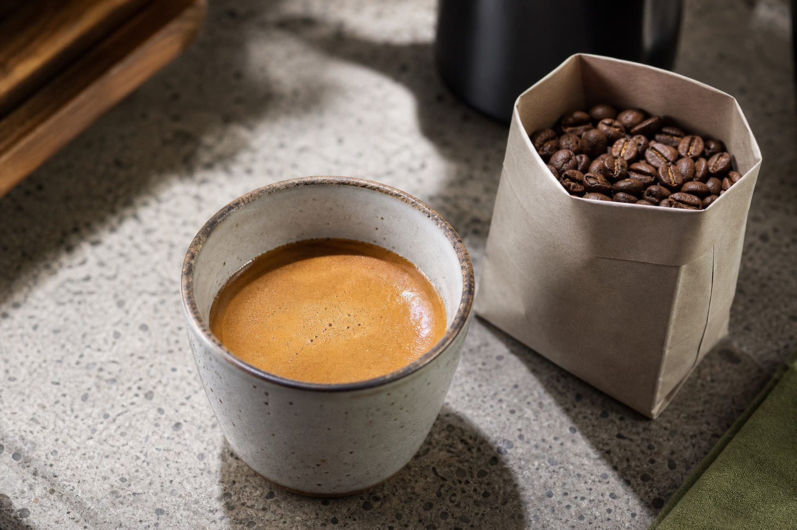
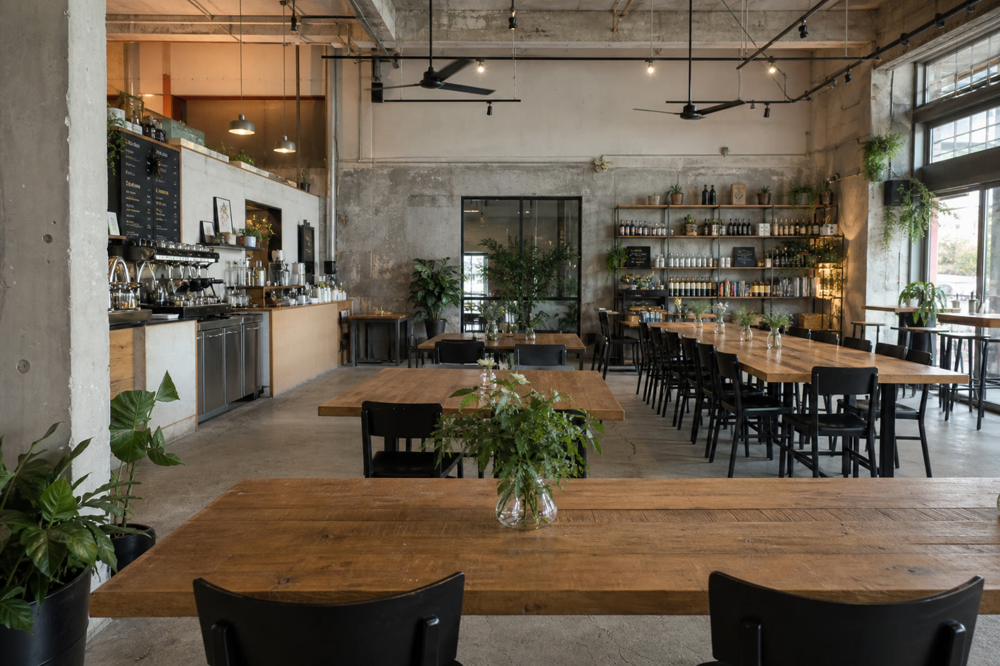

From the bar
- Espresso & milk drinksLa Cabra
- Filter / batch brewRotating
- Strawberry matchaSignature
- Cold brewDaily
Wynwood · Miami
Specialty coffee and daytime food in an unhurried industrial room — La Cabra in the cup, communal tables, soft daylight.
Coffee
Libertino serves specialty coffee from La Cabra — the Aarhus roaster known for bright, origin-forward cups. Espresso, filter, and a quiet matcha program for the slower afternoon.


Visit
Wynwood, Miami — a neighborhood specialty stop with room to stay.